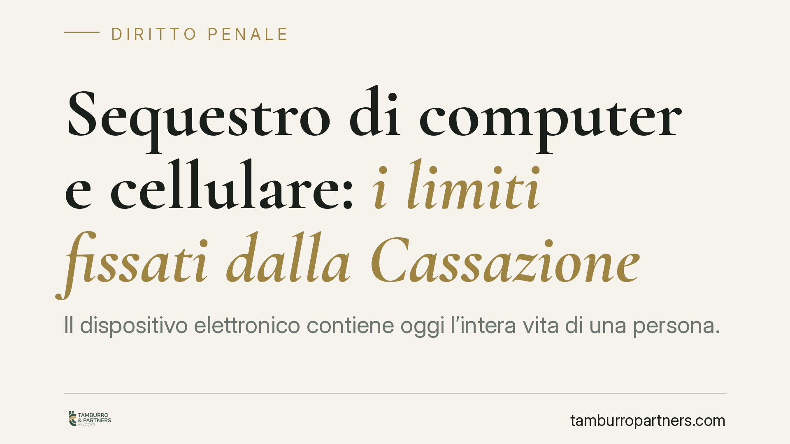

Sequestro di computer e cellulare: i limiti fissati dalla Cassazione
Il dispositivo elettronico contiene oggi l'intera vita di una persona. Per questo la Cassazione ha ridefinito i confini del sequestro probatorio di computer e smartphone, imponendo criteri di proporzionalità e vietando le acquisizioni massive e indiscriminate. Chi subisce un sequestro deve conoscere questi limiti per contestare atti che sconfinano nell'esplorazione ingiustificata dei propri dati.

Il quadro: perché il sequestro digitale è diverso
Sequestrare un cellulare o un computer non equivale a sequestrare un oggetto qualsiasi. Il dispositivo custodisce corrispondenza, foto, dati bancari, contatti, spostamenti, abitudini. L'apprensione dell'hardware apre, di fatto, l'accesso a una massa di informazioni che eccede quasi sempre l'oggetto dell'indagine.
Proprio da questa sproporzione strutturale nasce la linea interpretativa della Corte di Cassazione, che ha progressivamente irrigidito i presupposti del sequestro probatorio quando riguarda supporti informatici.
Inquadramento normativo
Il sequestro probatorio è disciplinato dall'art. 253 del codice di procedura penale (c.p.p.): consente di apprendere il *corpo del reato* e le *cose pertinenti al reato* necessarie per l'accertamento dei fatti. La polizia giudiziaria può procedervi d'urgenza ai sensi dell'art. 355 c.p.p., con successiva convalida del pubblico ministero. Diverso è il sequestro preventivo, previsto dall'art. 321 c.p.p., finalizzato a evitare che il bene aggravi le conseguenze del reato.
Un punto spesso trascurato riguarda l'art. 262 c.p.p.: quando cessano le esigenze probatorie, il bene va restituito. Trattenere un dispositivo dopo aver estratto i dati rilevanti non trova, in linea di principio, giustificazione.
La giurisprudenza di legittimità ha ancorato la validità del sequestro digitale a tre criteri:
- proporzionalità: il sacrificio dei diritti dell'indagato deve essere commisurato all'effettiva utilità probatoria;
- adeguatezza: la misura deve essere idonea allo scopo investigativo dichiarato;
- gradualità: si deve preferire la soluzione meno invasiva tra quelle disponibili.
Cosa sono i sequestri "massivi" ed "esplorativi"
La Cassazione ha ritenuto illegittimi due tipi ricorrenti di prassi.
Il sequestro massivo è l'apprensione integrale e indifferenziata di tutto il contenuto di un dispositivo, senza selezione dei dati effettivamente pertinenti. È il caso del cellulare copiato per intero quando l'indagine riguarda un singolo episodio circoscritto.
Il sequestro esplorativo è quello privo di un'ipotesi investigativa definita: si acquisisce il dispositivo *per vedere cosa contiene*, nella speranza di trovare elementi utili. Questa logica rovescia il rapporto tra indizio e ricerca della prova e viene censurata perché trasforma l'atto in una perquisizione generalizzata della sfera personale.
Il principio operativo che ne deriva è chiaro: dove è tecnicamente possibile, l'autorità deve procedere all'estrazione selettiva dei soli dati rilevanti (per parole chiave, intervalli temporali, categorie di file), restituendo il supporto fisico.
Implicazioni pratiche per chi subisce il sequestro
Per l'indagato e per chi detiene il dispositivo, questi principi non sono teorici. Un decreto di sequestro che non spiega perché serva l'intero contenuto del dispositivo, o che non individua il collegamento tra i dati cercati e l'ipotesi di reato, è vulnerabile.
Lo strumento di reazione è il riesame, che consente di sottoporre la misura al Tribunale competente. In quella sede si contesta l'assenza di motivazione sulla proporzionalità, l'indeterminatezza dell'oggetto, la mancata restituzione dopo l'estrazione dei dati.
Attenzione ai tempi: i termini per impugnare sono brevi e perentori. Un ritardo può precludere la contestazione, a prescindere dalla fondatezza delle ragioni.
Cosa fare in concreto
- Fatevi rilasciare copia del verbale e del decreto di sequestro: verificate cosa è stato appreso, con quale motivazione e in relazione a quale ipotesi di reato.
- Non consegnate spontaneamente credenziali o password senza prima consultare un difensore: la collaborazione è una scelta, non un obbligo automatico.
- Annotate data e ora della consegna del verbale: da lì decorrono i termini per il riesame.
- Chiedete la restituzione del supporto una volta effettuata la copia forense (*forensic copy*, cioè la duplicazione integrale certificata dei dati), quando le esigenze probatorie riguardano i dati e non l'hardware.
- Rivolgetevi tempestivamente a un legale: la valutazione sulla proporzionalità e sulla natura esplorativa del sequestro richiede l'esame del singolo atto.
Consigliamo di non affrontare la fase iniziale in autonomia: le scelte compiute nelle prime ore condizionano l'intera strategia difensiva.
Conclusione
Il sequestro di computer e cellulari non è illimitato. I criteri di proporzionalità, adeguatezza e gradualità offrono argomenti concreti per contestare acquisizioni indiscriminate. Conoscerli è il primo passo per esercitare i propri diritti entro i tempi utili.
Ogni condominio ha una storia a sé.
Se gestisci un'amministrazione e vuoi un confronto su una specifica questione condominiale, scrivi allo studio. Ti rispondiamo entro un giorno lavorativo.